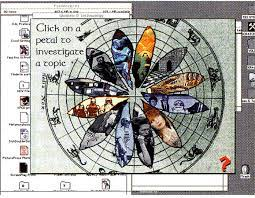

She Loves It, She Loves It Not
Women + Technology

The art piece titled, “She Loves It, She Loves It Not: Women and Technology”, was issued in 1993 and is described as a scope/content and videos represented were created using screencast software as a means for providing access to Macintosh formatted CD-ROMs. Tamblyn liked to work with other artists, and She Loves It, She Loves It Not was a collaboration with two of her SFSU students, Marjorie Franklin and Paul Tompkins. This art piece is an interactive multimedia essay that channels contradictory attitudes towards technology in art, it was both an alternative kind of artist's book and one of the first CD-ROMs created and produced by a woman artist. This piece includes texts, sound, movie clips, and images about women’s use of technology in the past, present, and future. Tamblyn’s inspiration for this project was based on the fact that the last two decades feminists have identified men’s monopoly of technology as an important source of their power; women’s exclusion from access to technological prowess is a crucial element in their dependence on men. This project addresses this issue from several different angles. This project is very detailed and easy to navigate. The viewer begins by accesses a series of screens by clicking a mouse. The initial interface is a graphic image of a daisy. Each of the petals of the daisy represents a loop of screens with a particular theme: Memory, Control, Power, Communication, Violence, Homunculus, Labyrinth, Interactivity, The Other, Representation, and Ideology. When a viewer clicks on a petal, the loop begins. Each screen is composed of a headline, a block of text, a static image and several “buttons” that open up to various elements. The images are derived from various found sources, including comic books, a catalog of robots, magazine advertisements and artworks. The text concisely analyzes the topic from the perspectives of cultural studies, sociology, and film history. A continuously looping sound is also associated with each screen. Special animated buttons allow viewers to read handwritten letters, and watch Quicktime movie clips. Because it is an interactive, non-linear piece, viewers can choose how long to spend with it, what order to view it in, whether to repeat or skip screens, and whether or not to open buttons. The visual aesthetic of the piece has a handmade collage look; we have deliberately avoided the slick sterility of much computer art. Its content combines aspects of an academic essay or documentary film with a poetic series of associated links between graphic, film, text, and sound elements. This project serves as a prototype exploring some of the new potentials of the interactive CDROM format. Both the form and the content of the work attempt to demonstrate how women might use and have used technology differently and how technology might adapt to female learning proclivities and female culture. An integral part of the project is the design of computer interfaces that are more user-friendly for women. Because computers have evolved as tools built by men for men to be used in warfare, the current interfaces tend to have a violent, aggressive character. They are hierarchical, mirroring the militaristic male pyramid with its rigid chain of command.